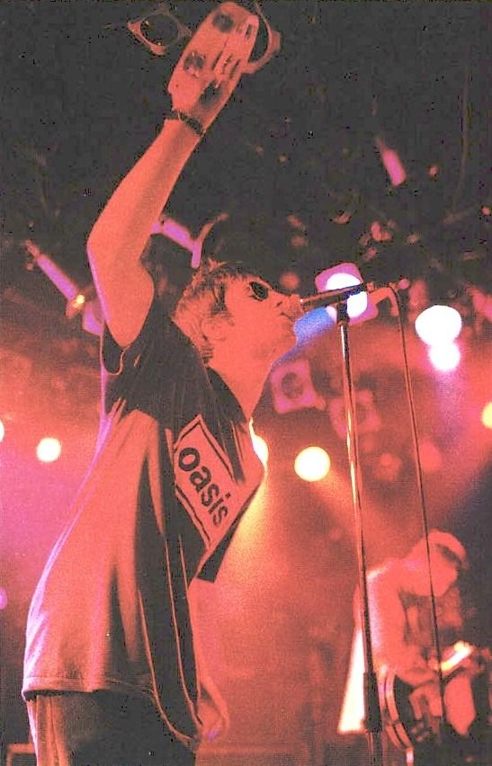
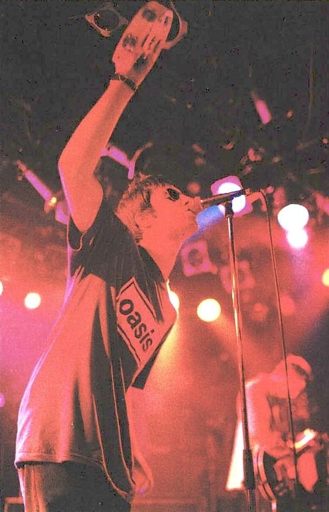

The Story
‘Some Might Say’ became Oasis’ first Number One single in April of 1995, it marked the midpoint of a two year period in which they rose from barely known Manchester could-bes playing in the tiny back rooms of pubs to the status of the most culturally significant rock ‘n’ roll band of the last three decades.

Just 12 months prior, they had released their debut single‘Supersonic’.


By the same time in 1996, they were performing to a quarter of a million fans over two nights at UK’s Knebworth Park – while ‘(What’s The Story) Morning Glory?’–was well on the way to becoming…

…the fifth biggest selling album of all time in Britain.
But more important than tickets or records sold, their biggest songs – the likes of – ‘Wonderwall’ , ‘Don’t Look Back In Anger’ and ‘Champagne Supernova’ – are songs that swathes of planet earth knows every last word of.
Songs that seemed to take on a life of their own the instant that they were released,
and whose power has not diminished more than a quarter of a century later.
Songs that will live on long, long after everyone involved in their creation has gone.

Songs that continue to inspire generation after generation of songwriters to pick up an acoustic guitar and try and move people in the same way
 

Because Oasis encapsulate the glamour, the dream, the drama, the attitude and the excitement of what it is to be rock ’n’ roll stars better than any of the countless acts that have followed in their wake; all of whom – even the ones that were not even born when they first arrived – cite them as a direct influence.

Liam Gallagher is a singer and a frontman who can rival the all time greats…

…the last of his kind, with a voice full of both attitude and soulfulness, and a presence that so many have tried and failed to imitate.
Noel Gallagher is a master of melody…

…whose catalogue – from ‘Rock ‘n’ Roll Star’, to ‘Live Forever’, to‘Stop Crying Your Heart Out’ , to ‘The Importance Of Being Idle’ – can go toe to toe with any other songwriter in history: a man whose gift for connecting with people is a truly special, unique thing.

And that connection, for the eighteen years that Oasis existed, is one that reached far beyond the shores of the country that the Gallaghers grew up in. From their first International tour in Japan in August 1994, to selling out New York’s Madison Square Garden in 2005 to River Plate Stadium in Buenos Aires in 2009, it was always apparent that…

…the attitude, energy and the soulfulness of their music was getting through to people in a way that transcends borders and language barriers.
And so, right up until their split in 2009, it continued; in stadiums packed full of devotees young and old in South America and North America, on mainland Europe, Australia and beyond.

In their earliest interviews, Liam and Noel Gallagher were unashamed about their skyscraping ambitions. They wanted to write better songs than anyone else, they wanted to sell more records than anyone else, they wanted to play bigger shows than anyone else.
They wanted – most importantly of all – to matter to people as much if not more than the bands who had inspired them as young, working class dreamers with nothing.
They wanted to create something that would live forever, and somehow they managed it.